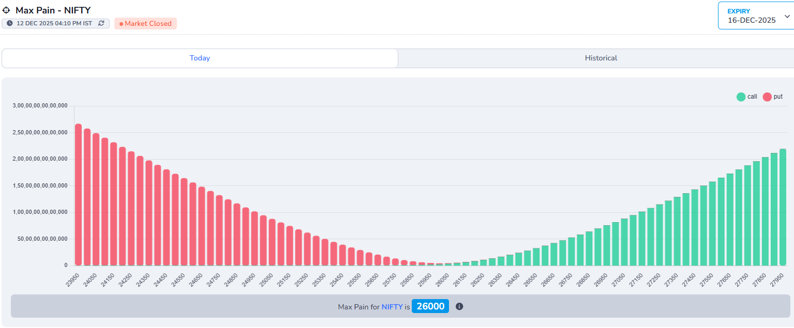
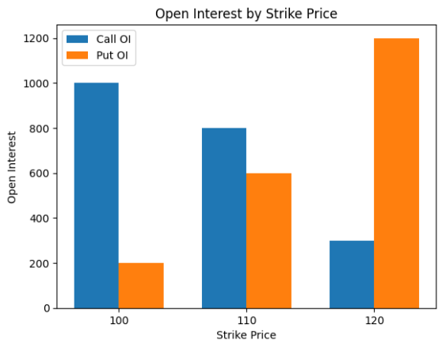
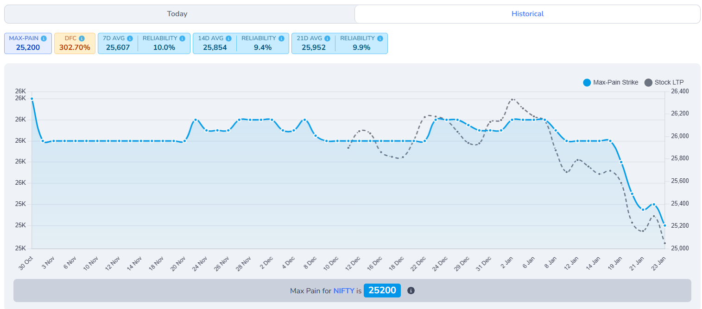
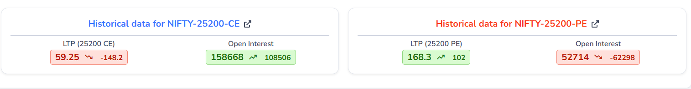
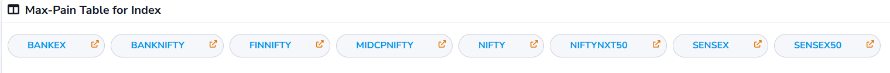

What is MaxPain ?
Max pain (also called “maximum pain price”) is the strike price where option buyers, in total, would lose
the most money at expiry and option sellers would lose the least amount of money .
At this price, the maximum number of call and put options expire worthless or with very little value, so
most buyers lose their premiums while sellers keep most of what they collected.
Many traders believe that, as expiry comes closer, the underlying price sometimes moves toward this
max‑pain strike, because big option sellers try to hedge or manage their risk around that level. so max
pain is not a guarantee or a magic target, just one way to see how positions are stacked in the option
chain.
Header
1. Last Updated Time
This indicates the most recent time when the option chain data was refreshed. It helps users know how
current the information is.
2.Live Status
The Live Status indicator confirms that the option chain data is updating in real time.
The timer shown next to it (for example, 0 min 12s) indicates how many seconds ago the data was last refreshed.
3.Expiry Selection
This section allows users to select the expiry date for which they want to view the max pain data.
Options typically have multiple expiry dates, and selecting one updates the displayed data accordingly.
Header1
1. Max Pain
Max Pain is the strike price at which option sellers (writers) face the least total loss at expiry.In simple words: It is the price where most option buyers lose money And most option sellers gain money
2. DFC (Distance From Close)
DFC shows how far today's closing price is from the current
Max Pain, expressed in percentage terms.
It helps traders understand whether the market price is
near or far from the option writers' comfort zone.
- Lower DFC → Price is closer to Max Pain
- Higher DFC → Price is far away from Max Pain
Formula
DFC = (|Close − MP_today| / ATM_strike_gap) × 100
Example
Assume the following values:
- Closing Price = 25,950
- Max Pain = 25,400
- ATM Strike Gap = 250
DFC = (|25,950 − 25,400| / 250) × 100
DFC = (550 / 250) × 100
DFC = 220%
Interpretation:
A DFC of 220% means the price is very far from Max Pain,
increasing the chance of mean reversion if market conditions support it.
3. 7D Avg MP (7-Day Average Max Pain)
7D Avg MP represents the average of Max Pain values from the
last 7 trading days.
Instead of relying on a single day's Max Pain, this value provides a
smoother and more stable reference level.
Formula
7D Avg MP = Average(MP of last 7 trading days)
Example
If Max Pain values for the last 7 days are:
25,600 | 25,500 | 25,700 | 25,800 | 25,650 | 25,750 | 25,850
Then:
7D Avg MP ≈ 25,721(Approximate Value)
Interpretation:
The 7-day average Max Pain acts as a stronger support or resistance zone
compared to a single-day Max Pain value.
4. Reliability (7D)
Reliability (7D) measures how trustworthy the
7-day average Max Pain level is.
It evaluates reliability by combining two key factors:
- How far the current price is from Max Pain
- How volatile Max Pain has been over the last 7 days
A higher reliability value means the Max Pain level is more stable
and dependable. A lower value indicates uncertainty.
Formula
Reliability = 1 / (1 + (|Close − MP| / ATM_strike_gap) + (StdDev(MP_7D) / ATM_strike_gap))
Example
Assume the following values:
- |Close − Max Pain| = 550
- ATM Strike Gap = 250
- Standard Deviation of MP (7D) = 300
Reliability = 1 / (1 + 2.2 + 1.2)
Reliability = 1 / 4.4
Reliability ≈ 0.11 → 11%
Interpretation:
A reliability of 11% suggests that the 7-day average
Max Pain level is not very stable. Traders should avoid using it as a
strong standalone support or resistance level.
Header2
5. 14D Avg MP (14-Day Average Max Pain)
14D Avg MP represents the average Max Pain value of the
last 14 trading days.
This provides a medium-term view of where option writers
are most comfortable, filtering out short-term noise.
Formula
14D Avg MP = Average(MP of last 14 trading days)
Example
If the Max Pain values over the last 14 trading days average out to:
14D Avg MP ≈ 25,925
Interpretation:
The 14-day average Max Pain acts as a more stable reference level compared
to the 7-day average and is useful for short- to medium-term analysis.
6. Reliability (14D)
Reliability (14D) measures how dependable the
14-day average Max Pain level is.
It considers both the current price distance from Max Pain and the
volatility of Max Pain over the last 14 days.
Formula
Reliability = 1 / (1 + (|Close − MP| / ATM_strike_gap) + (StdDev(MP_14D) / ATM_strike_gap))
Example
Assume the following values:
- |Close − Max Pain| = 550
- ATM Strike Gap = 250
- Standard Deviation of MP (14D) = 280
Reliability = 1 / (1 + 2.2 + 1.12)
Reliability = 1 / 4.32
Reliability ≈ 0.112 → 11.2%
Interpretation:
A reliability of around 11% suggests the 14-day Max Pain
level has moderate stability and should be used along with other indicators.
7. 21D Avg MP (21-Day Average Max Pain)
21D Avg MP represents the average Max Pain value of the
last 21 trading days.
This gives a positional or monthly-level view of where
option writers are most comfortable. It smooths out short-term fluctuations
and shows long-term sentiment.
Formula
21D Avg MP = Average(MP of last 21 trading days)
Example
If the Max Pain values of the last 21 sessions average out to:
21D Avg MP ≈ 26,000
Interpretation:
The 21-day average Max Pain acts as a strong and stable positional reference
level, useful for swing or positional analysis.
8. Reliability (21D)
Reliability (21D) measures how dependable the
21-day average Max Pain level is.
It evaluates reliability based on:
- How far the market is trading from Max Pain today
- Volatility of Max Pain over the last 21 days
Formula
Reliability = 1 / (1 + (|Close − MP| / ATM_strike_gap)
+ (StdDev(MP_21D) / ATM_strike_gap))
Example
Assume the following values:
- |Close − Max Pain| = 550
- ATM Strike Gap = 250
- Standard Deviation of MP (21D) = 260
Reliability = 1 / (1 + 2.2 + 1.04)
Reliability = 1 / 4.24
Reliability ≈ 0.118 → 11.9%
Interpretation:
A reliability of around 12% indicates the 21-day Max Pain
level is relatively stable and suitable for positional market analysis.
MaxPain Graph

How to claculate MaxPain?
To calculate max pain, you need to look at the open interest (OI) for all the call and put options at each
strike price. Open interest is the total number of outstanding option contracts that have not been exercised
or closed.

How to Read This Chart
This chart helps us understand how interest is distributed across different price levels.
Each part of the chart represents a specific meaning.
-
X-axis (Horizontal Axis):
Shows the strike prices such as 100, 110, and 120.
These are the price levels where traders have placed their expectations.
-
Y-axis (Vertical Axis):
Represents Open Interest, which means how many active positions
exist at each strike price.
By comparing the height of the bars at each strike price, we can understand
where interest is balanced and where it is heavily concentrated.
Chart Explanation (Based on Table)
| Strike |
Call OI |
Put OI |
| 100 |
1000 |
200 |
| 110 |
800 |
600 |
| 120 |
300 |
1200 |
Max Pain Case Analysis (Based on Table)
Case 1: Strike 100
- Very high interest on the upper-side expectation
- Very few people expect the price to stay below this level
- If expiry happens here, many people lose money
- Result: High pain
Case 2: Strike 110
- Interest is balanced on both sides
- Neither side is too dominant
- Loss is spread across participants
- Result: Lowest overall pain
Case 3: Strike 120
- Very high interest on the lower-side expectation
- Very few people expect the price to stay above this level
- Expiry here again causes heavy loss
- Result: High pain
Max Pain Conclusion
The strike price where interest is most balanced creates the least total loss.
From this data: Max Pain = 110
Historical-Maxpain

Max Pain – Historical View
This chart shows how the Max Pain strike and the
stock’s price (LTP) have moved over time.
It helps traders understand whether the market price is
moving towards or away from the Max Pain level.
1. How to Read This Chart
The X-axis (horizontal) represents time,
showing trading days from left to right.
The Left Y-axis shows the Max Pain strike levels,
which correspond to the blue line.
The Right Y-axis shows the stock’s market price (LTP),
which corresponds to the grey dotted line.
2. What Each Line Shows
Blue Line – Max Pain Strike
The blue line represents the Max Pain level for each trading day.
- It changes based on option open interest distribution
- Moves slowly compared to price
- Acts as a reference or gravity level
A flat blue line indicates stable option positioning.
Sharp changes suggest shifting option writer expectations.
Grey Dotted Line – Stock LTP
The grey dotted line shows the actual market price (Last Traded Price)
of the stock or index.
- Moves faster and more frequently
- Reflects real-time buying and selling
- Can move above or below Max Pain
When the grey line moves back toward the blue line,
it often signals price normalization,
especially near expiry.
How to Use This Chart Practically
- Use it to identify mean-reversion zones
- Combine with DFC and Reliability for confirmation
- Avoid using Max Pain alone during strong trending markets
Note: Max Pain is a reference tool, not a prediction.
Always confirm with price action and other indicators.
Historical Option Data (Strike-wise View)

This section appears when you click on a specific strike price
from the Max Pain page. It shows how both the Call (CE) and
Put (PE) options for that strike have behaved historically.
What Happens When You Click a Strike
When you click a strike (for example, 25200), the system opens
historical data for:
- NIFTY-25200-CE (Call Option)
- NIFTY-25200-PE (Put Option)
This allows you to analyze price movement and
open interest behavior separately for calls and puts.
What You See in Each Card
LTP (Last Traded Price)
The LTP shows the most recent traded price of the option.
Along with it, the arrow and number indicate how much the price has
increased or decreased compared to the previous session.
- Green ↑ → Price has increased
- Red ↓ → Price has decreased
This helps you quickly understand whether buyers or sellers were dominant.
Open Interest (OI)
Open Interest shows the total number of active option contracts.
The change value indicates whether positions are being:
- Added (increase in OI)
- Unwound (decrease in OI)
This gives insight into trader commitment at that strike.
How to Analyze This Data
By comparing CE vs PE data at the same strike, you can:
- See where traders are building positions
- Identify bullish or bearish bias at that level
- Confirm whether Max Pain is supported by option activity
For example:
- CE price falling with rising OI → Call writing (bearish pressure)
- PE price rising with rising OI → Put buying (downside protection)
Why This Section Is Important
Max Pain shows a theoretical equilibrium level, but this
section reveals the actual behavior of traders at each strike.
Using both together helps you avoid blind assumptions and make
more informed trading decisions.
Tip: Always combine this data with price action,
overall trend, and expiry proximity.
Max-Pain Table for Index

This section lets you quickly switch between different
market indices to view their respective
Max Pain levels.
Each button represents an index (like NIFTY,
BANKNIFTY, FINNIFTY, etc.).
Clicking on any index loads its Max Pain data instantly.
This helps you:
- Compare Max Pain across multiple indices
- Focus only on the index you are trading
- Save time without changing pages
Tip: Always select the index that matches your
active option strategy for accurate analysis.
Max Pain Table – Column Explanation
1. Symbol
This column shows the index name (such as NIFTY, BANKNIFTY, FINNIFTY).
You can use the search box to quickly find a specific index.
Clicking on a symbol opens its detailed Max Pain view.
2. Expiry
This column displays the option expiry date for the selected index.
Max Pain is always calculated with respect to a specific expiry,
so this date tells you which contract the data belongs to.
3. Symbol LTP
Symbol LTP shows the current market price
(Last Traded Price) of the index.
The arrow and percentage indicate how much the price has moved
compared to the previous session:
- Down arrow → Price has fallen
- Up arrow → Price has risen
4. Max Pain
This column shows the Max Pain strike level for the index.
It represents the price where option sellers face the least loss
and is often used as a reference or equilibrium level,
especially near expiry.
Tip: Compare Symbol LTP with
Max Pain to see whether the market is trading
above, below, or near the option writers’ comfort zone.
Why Is It Called “Pain”?
It is called Max Pain because it shows the price level where
option buyers feel the most pain by losing most of the premiums they paid.
At the same level, sellers feel the least pain because
they are able to keep most of the money they collected.
How Traders Actually Use Max Pain
Some traders use Max Pain only as a reference level,
especially near expiry, to check whether the price is moving
toward or away from it.
Max Pain is often combined with other market information such as:
- Support and resistance levels
- Open interest build-up
- Market trend
- Trading volume
Max Pain is one tool for expiry analysis, not a stand-alone signal to buy or sell.
Limitations of Max Pain
-
Max Pain can change when open interest changes, so it is not a fixed level.
-
Big news events, price gaps, or strong trends can move the market far away
from the Max Pain level.
-
Max Pain only shows where losses would be highest if the price closes there;
it does not guarantee that the price will move to that level.